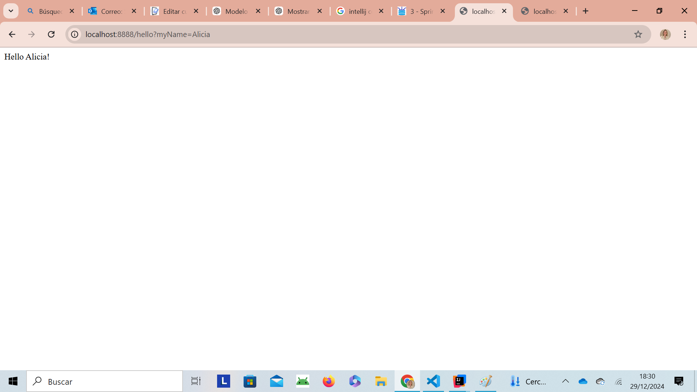

Spring Framework¶
Spring es un framework de código abierto que te ayuda a crear aplicaciones en Java o Kotlin de forma más fácil, rápida y ordenada.
En vez de que tú tengas que hacer todo a mano (crear objetos, conectar clases, preparar la base de datos, configurar servidores…), Spring lo hace por ti automáticamente.
üí≠ Imagina que construir una aplicaci√≥n es como montar un mueble enorme.
- Sin Spring: tú haces todos los agujeros, ajustes y conexiones.
- Con Spring: el mueble viene ya pre-montado y solo colocas las piezas que necesitas.
ü™Ñ Spring te da la estructura y se encarga de la parte dif√≠cil.
Filosofía de Spring
Spring se basa principalmente en dos ideas fundamentales:
-
1Ô∏è‚É£Inversi√≥n de Control (IoC) üîÑ: Spring se encarga de crear y gestionar los objetos de tu aplicaci√≥n.
-
2Ô∏è‚É£Inyecci√≥n de Dependencias (DI)üîå: Spring coloca los objetos donde hacen falta automáticamente.
Es como si Spring fuera quien enchufa los cables para que todas las piezas funcionen juntas sin que tú los conectes.
Además de IoC y DI, Spring se basa en tres pilares prácticos:
-
3️⃣Anotaciones: indican qué hace cada clase.
- @Controller → muestra páginas
- @RestController → devuelve JSON
- @Service → lógica de negocio
- @Repository → acceso a datos
- @Entity → tabla de la base de datos
-
4️⃣Autoconfiguración (Spring Boot): prepara el proyecto por ti.
- servidor web
- conexión a BD
- estructura de proyecto
- dependencias necesarias
-
5️⃣Starters: paquetes listos para usar según lo que quieras hacer..
- spring-boot-starter-web → para rutas y controladores
- spring-boot-starter-data-jpa → para BD y CRUD
- spring-boot-starter-thymeleaf → para páginas HTML
Componentes principales:
Los componentes principales de Spring Framework son:
- Spring Core: El núcleo del framework, encargado de la inyección de dependencias.
- Spring MVC: Permite el desarrollo de aplicaciones web utilizando el patrón Modelo-Vista-Controlador.
- Spring Boot: Facilita la creación de aplicaciones basadas en Spring con una configuración mínima.
- Spring Data: Simplifica el acceso a datos con soporte para JPA, MongoDB, Redis, entre otros.
- Spring Security: Proporciona herramientas para implementar seguridad en aplicaciones.
- Spring Cloud: Ayuda en la construcción de aplicaciones distribuidas y microservicios.
Requisitos previos para crear una aplicación con Spring
- JDK: Asegúrate de tener Java Development Kit instalado.
- Maven o Gradle: Para gestionar dependencias.
- IDE: IntelliJ IDEA, Eclipse u otro entorno de desarrollo.